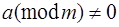

Квадратик таккослама
Таъриф. Куйидаги:
ах2+bx+c = 0 (mod m) (1)
кўринишдаги таккослама квадратик
таккослама дейилади. Бу ерда а сони m га бўлинмайди, яъни 
Теорема. (1) кўринишдаги квадратик таккосламани хар доим куйидаги:
х2 = d (mod m1) (2)
кўринишга келтириш мумкин.
Хакикатан, (1) нинг иккала кисмини ва модулини 4а сонига кўпайтирсак (таккослама хоссасига кўра бунга хаккимиз бор):
4а2х2+4аbх+4ас=0 (mod 4ma) ёки
(2ах+b)2–b2+4ac=0 (mod 4ma),
у=2ах+b десак, охирги таккослама:
у2=b2–4ac (mod 4 ma) (3)
кўринишга келади.
Нихоят b2–4ac=d, 4ma=m1 белгилаш киритиб,
у2=d (mod m1) (4)
таккосламани хосил киламиз. (1) нинг хар бир ечими (4) ни хам каноатлантиради. Лекин (4) нинг хар бир ечими (1) нинг хам ечими бўлавермайди. Шунинг учун (4) нинг ечимлари орасидан (1) нинг хам ечими бўладиганларини ажрата олиш керак. Бунинг учун эса:
х = (у–b)/2а
нисбат бутун сон эканлигига караш керак, яьни нисбат бутун сон бўлса, (4) каноатлантирувчи ечим (1) нинг хам ечими бўлади.
Одатда мисоллар ечишда (1) дан (4) га ўтишда, таккосламанинг чап кисмини бирор ифоданинг тўла квадрати шаклига келтириб олиш лозим.
Мисол. Куйидаги
4х2–11х–3=0 (mod 13)
квадрат таккослама ечимини топинг.
Ечиш. 11=24 (mod 13), 3=16 (mod 13), бўлгани учун
4х2–24х–16=0 (mod 13)
тенглик ўринли бўлади.
Таккослама хоссасига кўра ЭКУБ(4,13)=1 бўлгани учун 4 сонига кискартириш мумкин, яьни:
х2-6х-4=0 (mod 13)
ёки
(х-3)2-13=0 (mod 13)
охирги таккослама хам (х-3)2=0 (mod 13) таккосламага тенг кучли бўлганлиги учун:
Жавоб: х=3 (mod 13).
Таъриф. Агар ЭКУБ(а, m)=1 бўлганда, х2=а( mod m) таккослама ечимга эга бўлса, а – сонига m модуль бўйича квадратик чегирма, акс холда а – сонига m модуль бўйича квадратик ночегирма дейилади.
Айтайлик, ушбу
х2 = а (mod р) (5)
таккослама берилган. Бу ерда ЭКУБ(а, р)=1, ЭКУБ(2, р)=1 бўлиб, р – туб сон бўлсин. Бундай хусусиятдаги квадратик чегирмалар учун куйидаги тасдик ўринли.
Тасдик. (5) кўринишдаги квадратик чегирмада (р-1)/2 таси квадратик чегирма ва яна шунча сондагиси квадратик ночегирма бўлади.
Туб модулли квадратик таккосламаларни модули етарлича кичик бўлганда куйидаги усул бўйича хисоблаш мумкин. Бунинг учун р – модуль бўйича чегирмаларнинг келтирилган системасидаги:
1, 2, 3,...... (р-1)/2
(худди шундай манфий ишоралиларини хам ёзилган деб тушуниш керак) хар бир чегирмани кетма-кет (5) таккосламага кўйиб ўтирмасдан х ни 1, 2, 3, ... (р-1)/2 лар билан алмаштириш кифоя. Бундай холда (5) нинг чап томонида
12, 22, 33, ..., ((р-1)/2)2
сонлар хосил бўлади.
Мисол. 11 модуль бўйича энг кичик мусбат квадратик чегирмаларни топинг.
Ечиш. Бизда р=11, у холда (11-1)/2=5 бўлганидан, 1, 2, 3, 4, 5 сонларнинг квадратларини караб чикамиз:
12=1(mod 11), 22=4(mod 11), 32=9( mod 11), 42=5( mod 11), 52=3( mod 11).
Демак, 11 модуль буйича квадрат чегирмалар 1, 4, 9, 5, 3 сонлар бўлиб; 2, 6, 7, 8, 10 сонлар квадрат ночегирмалар бўлади.
Умуман куйидаги тасдик ўринли:
Тасдик. Агар (5) таккослама ечимга эга бўлса, у холда ечим иккита бўлади.
Куйидаги Эйлер критерияси деб аталувчи критерия эса (5) кўринишдаги квадрат таккослама ечимга эга ёки эга эмаслигини аниклайди.
Теорема (Эйлер теоремаси). Агар ЭКУБ(а, р)=1 бўлиб,
– а(р-1)/2=1 (mod p) ўринли бўлса, (5) таккослама иккита ечимга эга бўлади;
– а(р-1)/2=-1 (mod p) ўринли бўлганда эса (5) таккослама ечимга эга бўлмайди.
Ушбу критериянинг камчилик томони шундаки,
х2 = а (mod p), ЭКУБ(а, р)=1
таккосламада р – туб сон етарлича катта бўлса, квадратик таккосламани ечиш масаласи мураккаблашади. Бундай холларда L(а/р) кўринишда белгиланувчи ва Лежандр символи деб аталувчи символдан фойдаланилади.
Мисол. x2=3 (mod 13) – таккослама ечимга эгами?
Ечиш. Ушбу масалани Эйлер критериясидан фойдаланиш асосида ечамиз:
a=3; p=13; ==> a(p-1)/2(mod p) ==> 3(13-1)/2(mod 13) = 36(mod 13) = 33*33(mod 13) = 27*27(mod 13) = 1*1 (mod 13) =1
Машклар. Эйлер критерияси ёрдамида куйидаги квадратик таккосламаларнинг ечимга эга ёки ечимга эга эмаслигини аникланг:
1) x2=5 (mod 13)
2) x2=6 (mod 19)
3) x2=7 (mod 31)
4) x2=8 (mod 29)
5) x2=12 (mod 59)